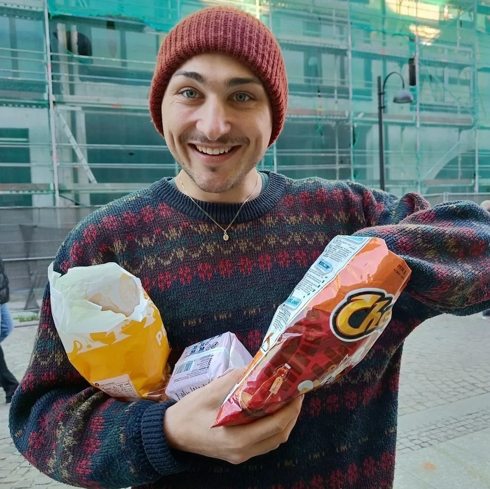
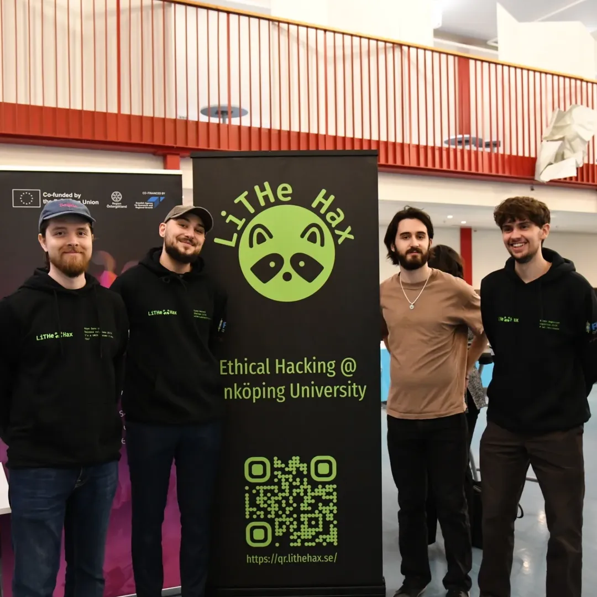
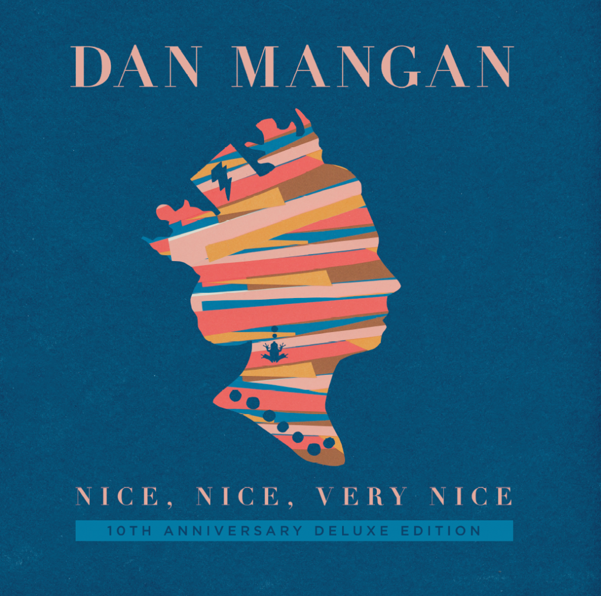
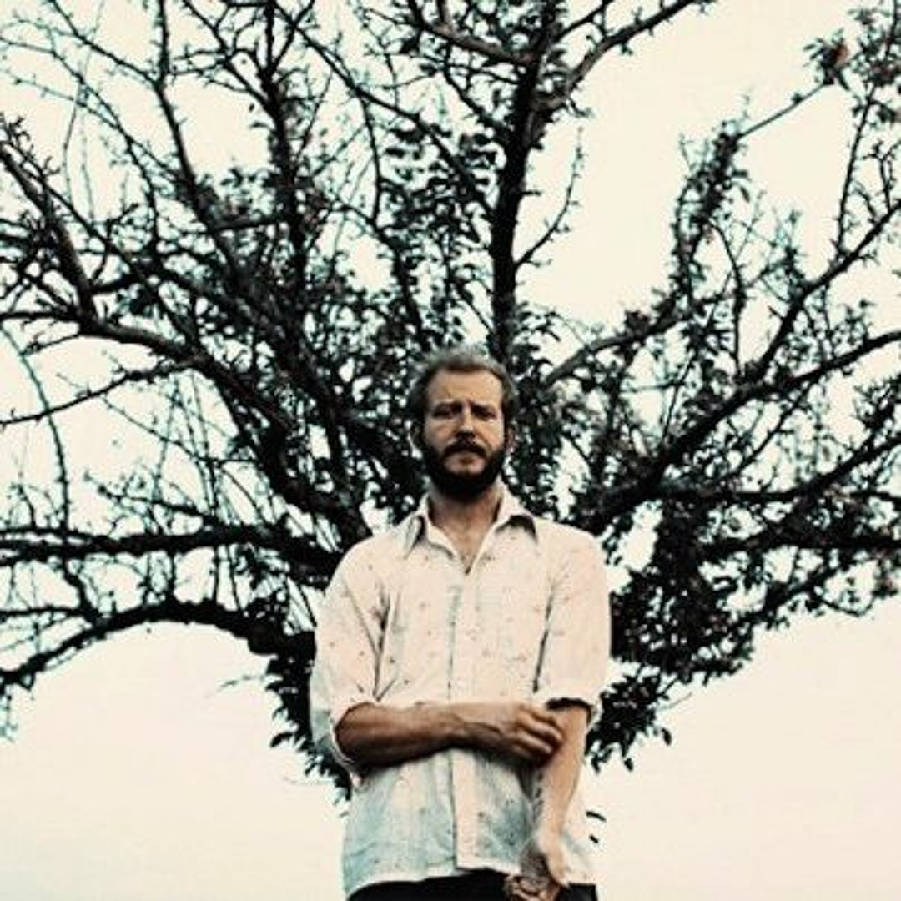
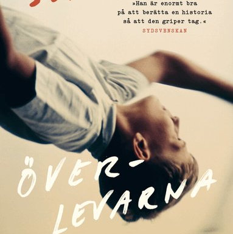
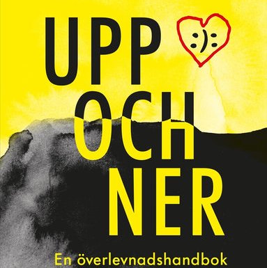
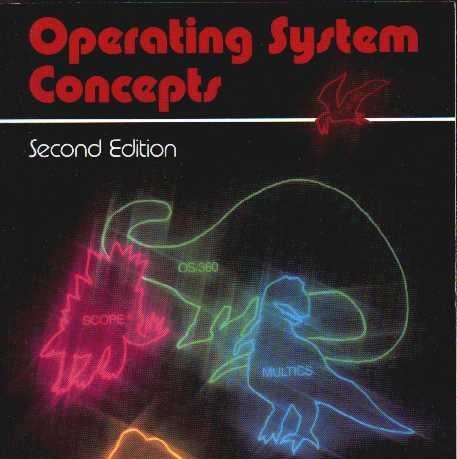

what are you doing?
this is a now page. if you have your own site, you should make one too!
my life is often busy, and i've been somewhat secretive when sharing details with family and friends. i thought this would be a great way to keep everyone updated on what i'm currently doing. i'll do my best to keep this page updated with any new happenings. thank you, Phillip Ridlen, for inspiring me with your now page!
this is what i'm doing as of march 28 2026
life 🌟

i had my birthday and invited some friends over for a party at my place. i have actually been going to a lot of parties lately, and while it has been fun i should probably not make that a routine. i have also been doing pole dance for a few months now and will keep doing that with my friends for a while, even though i suck at it, it is actually super hard. besides that, i am planning some traveling and vacation for this summer.
work 💼
Opera Software
i have been helping out with kyc stuff and doing onboarding work. i have also been working on the new static card stack, we dropped the animated one. maybe i will write a blog post about that once we are done with the card stack, since it is still being decided on, i think. i also found out that i am going to the kotlin conference again, which is really exciting. we also had an ai workshop where we got to vibe code for seven hours, or rather, run claude in auto-accept mode using planning mode and interfere with it as little as possible. the idea was to get better at prompting and explore features, since we could basically do whatever we wanted with the app.
organizations 🏢
LiTHe Hax

we hosted our ctf and helped arrange a digital forensics conference by contributing food and drinks. we are also planning our last events, since i am leaving the organization in two months at the annual meeting. so we are mostly wrapping things up, but we still have two events left. we also participated in undutmaning and ended up in place 52. and this monday we are having a meeting with foo café to discuss a possible event collaboration.
LiTHanian
we are wrapping up as well. we are planning our last issue, which will be around 60-70 pages. it will probably be the spiciest magazine so far. we are also trying to squeeze in some team building before everything ends.
LSP Advisory Board
we had a meeting about ai, which was interesting to be part of. there were a lot of different perspectives. my expertise is cyber security, so that is what i am contributing with. it feels like a lot of software that produces security issues is being vibecoded, and on the other side we have the vibehackers, essentially automated script kids, finding those security holes. it is almost like the dead internet theory, but for the software industry. all of this feels pretty ironic. we will see what the world becomes eventually. it is an interesting time we are living in.
hobbies ⚙️
programming
i received my first real bug bounty and prepared multiple reports for submission. i also improved my now page archiver script, did four ctfs and worked on my website. i prepared outstanding for development, did some operating systems practice programming. and of course work stuff as well.
music
i am trying to find some new music. one of my close friends sends me song recommendations every now and then, so i am really making the most of that. unfortunately this section will not be as accurate for a while since i have switched to using a dumb phone, where i cannot track my music, at least not right now. but i will solve that problem eventually. for now, this is based only on when i am using spotify at work and when i am on my desktop computer at home.
songs played
2249 plays
daily average
80 plays
biggest listening day
mar 16th with 185 plays
top artist
Dan Mangan
top album

Nice, Nice, Very Nice by Dan Mangan
top song

HEAVENLY FATHER by Bon Iver
last played
Love Takes Miles by Cameron Winter
writing
i have been writing some poems, doing some journaling and working on documentation and testimonial writing. but i have not done much of the writing i really want to do, like movie scripts or books. i just don't have the time for that right now.
reading
i am still reading the same books, and i have also started one more. i am almost finished with överlevarna, and i have read about a quarter of the operating systems book. slowly making progress with the other two as well.

Överlevarna by Alex Schulman

Upp och ner by Henrik Wahlström

Operating System Concepts by James L. Peterson, Abraham Silberschatz

Folk med ångest by Fredrik Backman
expert progress 🎓
the concept of reaching 10,000 hours to become a professional or an expert in a field is derived from Malcolm Gladwell's book "Outliers: The Story of Success". gladwell popularized the idea that achieving a high level of proficiency in any field typically requires about 10,000 hours of dedicated practice. this notion is based on the research of psychologist Anders Ericsson, who studied the practice habits of elite performers in various domains.